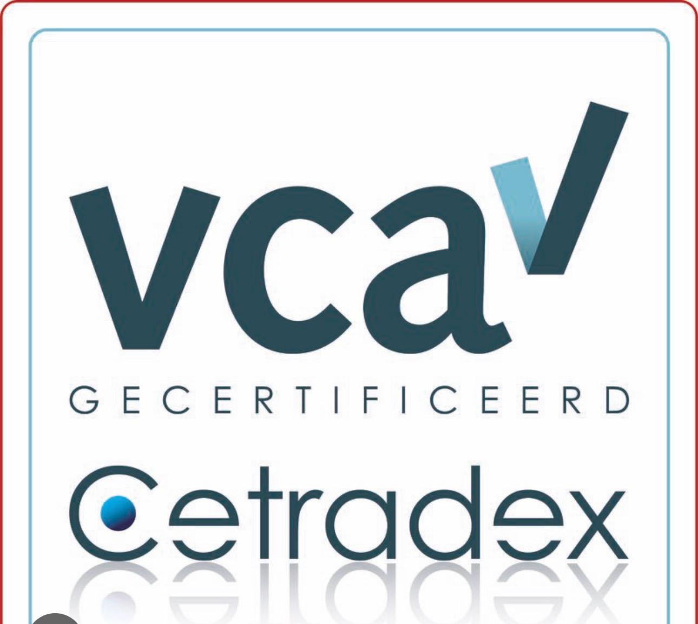
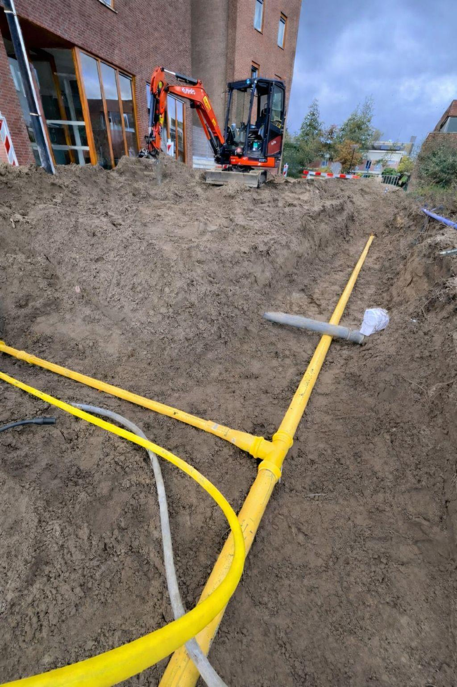
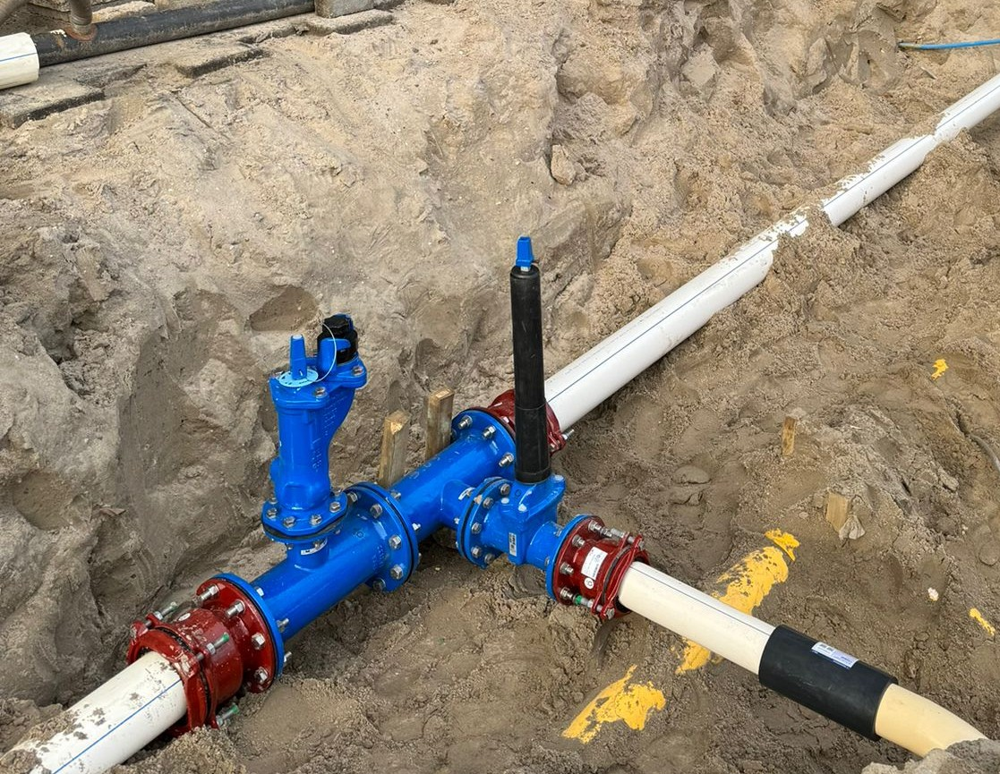
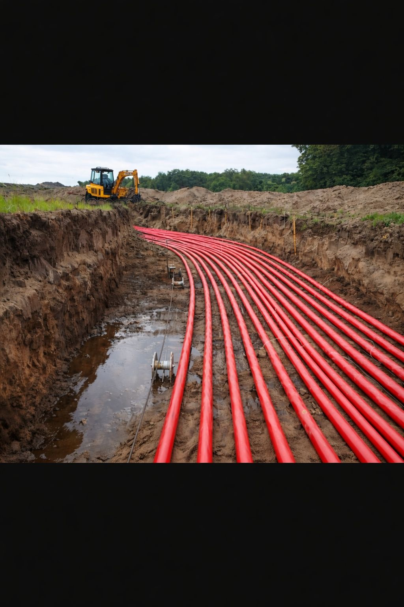
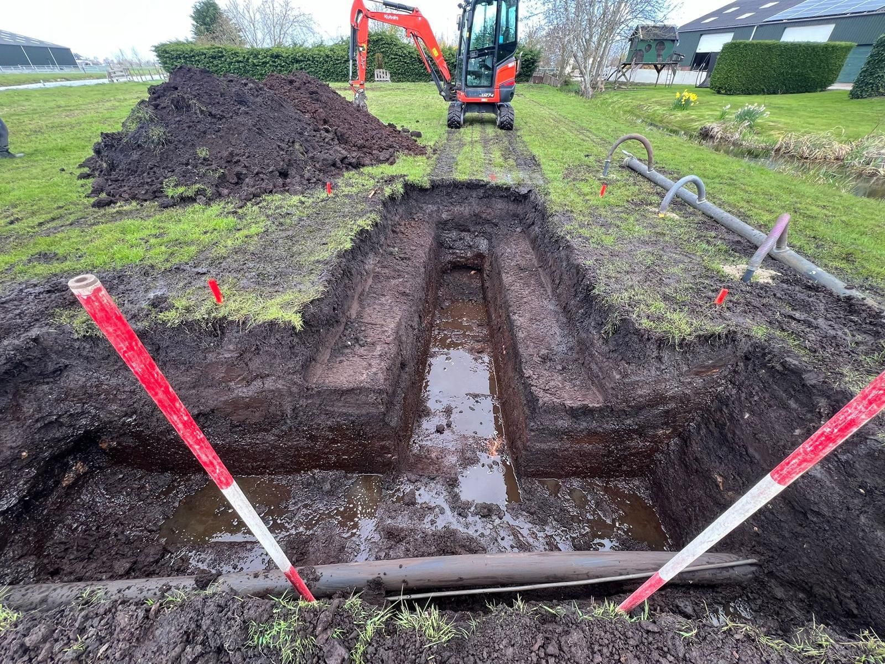
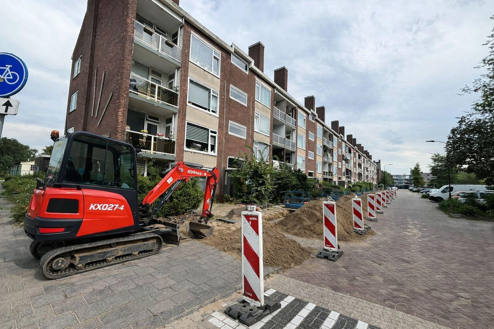

10+ Jaar Ervaring in Ondergrondse Infrastructuur
Prestige Infratechniek BV is een gecertificeerde en betrouwbare aannemer met meer dan tien jaar ervaring in gas-, water- en elektriciteitsinfrastructuur in heel Nederland. Wij realiseren projecten van klein tot groot — van kleinschalige aansluitingen tot complete netvervangingen en turn‑key infra‑oplossingen — altijd met vakmanschap, veiligheid en professionaliteit.
Wij beschikken over alle benodigde materialen en kennis om elk project efficiënt en volledig uit te voeren. Opdrachtgevers kunnen erop vertrouwen dat geen enkel onderdeel of materiaal ontbreekt, en dat elk project met de juiste middelen en expertise wordt afgerond.
Veilig werken in risicovolle omgevingen, met focus op gezondheid, veiligheid en milieu
Persoonlijke certificering van operationeel leidinggevenden op het gebied van veiligheid
Vakbekwaamheid voor aanleg en onderhoud van drinkwaterleidingen
Gecertificeerd voor veilig uitvoeren van elektrische installaties en werkzaamheden aan laag- en middenspanningskabels
Veiligheidsinstructies en examen gericht op gas
Bedrijfshulpverlening – eerste hulp, brandbestrijding en evacuatie op de werkvloer
Veilig werken langs de weg – afzetting en beveiliging van werkzaamheden op of naast rijbanen
Bij Prestige Infratechniek staat veiligheid centraal in al onze ondergrondse werkzaamheden. Wij werken met maximale zorg voor mens, omgeving en bestaande infrastructuur.
Vooraf brengen wij kabels en leidingen nauwkeurig in kaart en analyseren wij de risico’s. Onze werkzaamheden worden uitgevoerd volgens de geldende wet- en regelgeving, door gecertificeerde vakmensen met de juiste kennis en ervaring.
Tijdens de uitvoering zorgen wij voor duidelijke afzettingen, correcte signalering en continue controle op de werkplek. Met modern en gekeurd materieel voorkomen wij schade en gevaarlijke situaties.
Door onze strakke werkwijze en heldere communicatie garanderen wij een veilige, efficiënte en professionele uitvoering van ieder project.
Veilig werken is geen keuze, maar onze standaard.
Prestige Infratechniek werkt volgens aantoonbare kwaliteits- en veiligheidsnormen. Deze certificering onderstreept onze professionele werkwijze en onze focus op betrouwbare uitvoering.

Prestige Infratechniek staat voor kwaliteit en vakmanschap binnen de ondergrondse infrastructuur. Met meer dan 10 jaar ervaring worden zowel kleinschalige als grootschalige projecten door heel Nederland gerealiseerd.
Door het inzetten van modern materieel, hoogwaardige materialen en vakbekwame specialisten worden projecten volledig turn-key en in eigen beheer uitgevoerd. Efficiëntie, veiligheid en betrouwbaarheid vormen daarbij de basis.

Specialisatie in het aanleggen en vervangen van gasleidingen, waaronder distributie- en dienstleidingen. De uitvoering vindt plaats volgens de geldende veiligheidsnormen en richtlijnen.
Projecten variëren van kleinschalige aansluitingen tot complete netvervangingen, waarbij duurzaamheid en continuïteit van het netwerk centraal staan.

Complete aanleg en vervanging van waterleidingen binnen zowel bestaande als nieuwe infrastructuren.
Een efficiënte aanpak, gecombineerd met nauwkeurige uitvoering, zorgt voor minimale overlast en een toekomstbestendig leidingnetwerk met een lange levensduur.

Uitvoering van werkzaamheden aan elektriciteitsnetwerken, met focus op laagspannings- en middenspanningskabels.
Het aanleggen, vervangen en onderhouden van kabeltracés gebeurt volgens de geldende normen en richtlijnen, waarbij veiligheid en precisie voorop staan.

Van sleuf tot oplevering: het volledige traject wordt verzorgd.
Grondwerkzaamheden, voorbereiding en het herstellen van bestrating worden geïntegreerd uitgevoerd, wat zorgt voor een efficiënte doorlooptijd en één duidelijk aanspreekpunt binnen het project.

Proefsleuven vormen een essentiële basis binnen de voorbereiding van infraprojecten.
Door het inzichtelijk maken van de bestaande ondergrondse situatie ontstaat een solide basis voor engineering. Deze gegevens dragen direct bij aan betrouwbare ramingen, nauwkeurige calculaties en een efficiënte projectplanning, waardoor risico's tijdens de uitvoering aanzienlijk worden beperkt.
Heeft u een project of vragen? Wij staan klaar!
Neem direct contact met ons op voor vragen, projectaanvragen of een open kennismaking. We reageren zo snel mogelijk.
Adres:
Overwegwachter 4
3034 KG Rotterdam
Nederland
Tel: 0628395500
E-mail: info@prestigeinfratechniek.nl
KVK: 99617919
Bekijk onze locatie direct op de kaart en plan eenvoudig uw route naar ons adres in Rotterdam.
Open in Google Maps